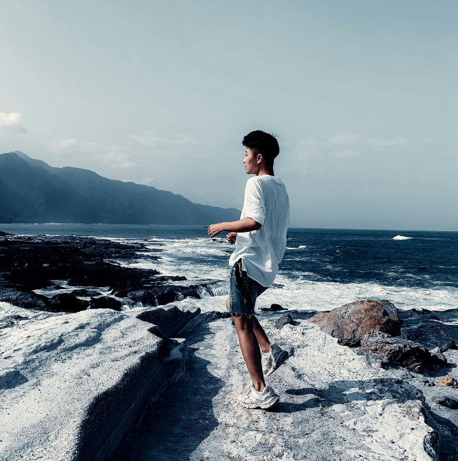
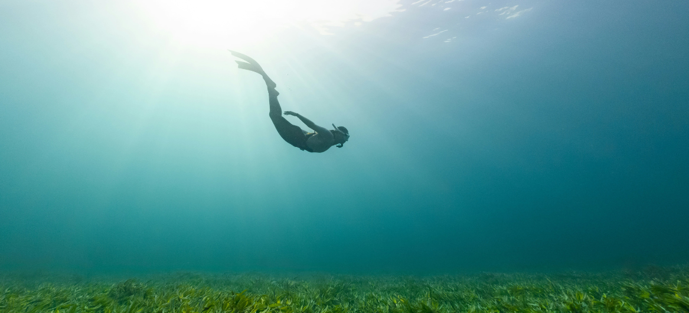

今日減碳行動：
讓我們一‘碳’究境碳排放的真相
透過即時的交通資訊與數據化的減碳工具，讓通勤族和環保推動者輕鬆採取更低碳、更高效的生活方式。
一“碳”究竟的友站致力於讓低碳選擇變得便捷且有趣，激發更多人為地球的可持續發展貢獻力量。


親愛的地球：
你好！我是小明，我最喜歡在公園裡跑來跑去，也喜歡去海邊玩沙子。
媽媽說，我們要愛護你，不能亂丟垃圾，也不能浪費水。地球，我想告訴你，以後我會和同學一起種很多小樹，讓你變得更漂亮。希望等我長大，你還是一個很美麗的大地球！

親愛的地球：
謝謝你無私地滋養著我們，給予藍天、白雲、青山與綠水。你的四季輪替，讓我們感受到生命的變化與美好。
然而，我們也深知自己的行為正在傷害你。請相信我們仍在努力修補這段關係，從減少塑膠、節能減碳到
植樹造林。我們希望未來的你，依然能展現純淨與和平，讓我們的後代也能擁抱你。


透過即時的交通資訊與數據化的減碳工具，讓通勤族和環保推動者輕鬆採取更低碳、更高效的生活方式。
一“碳”究竟的友站致力於讓低碳選擇變得便捷且有趣，激發更多人為地球的可持續發展貢獻力量。